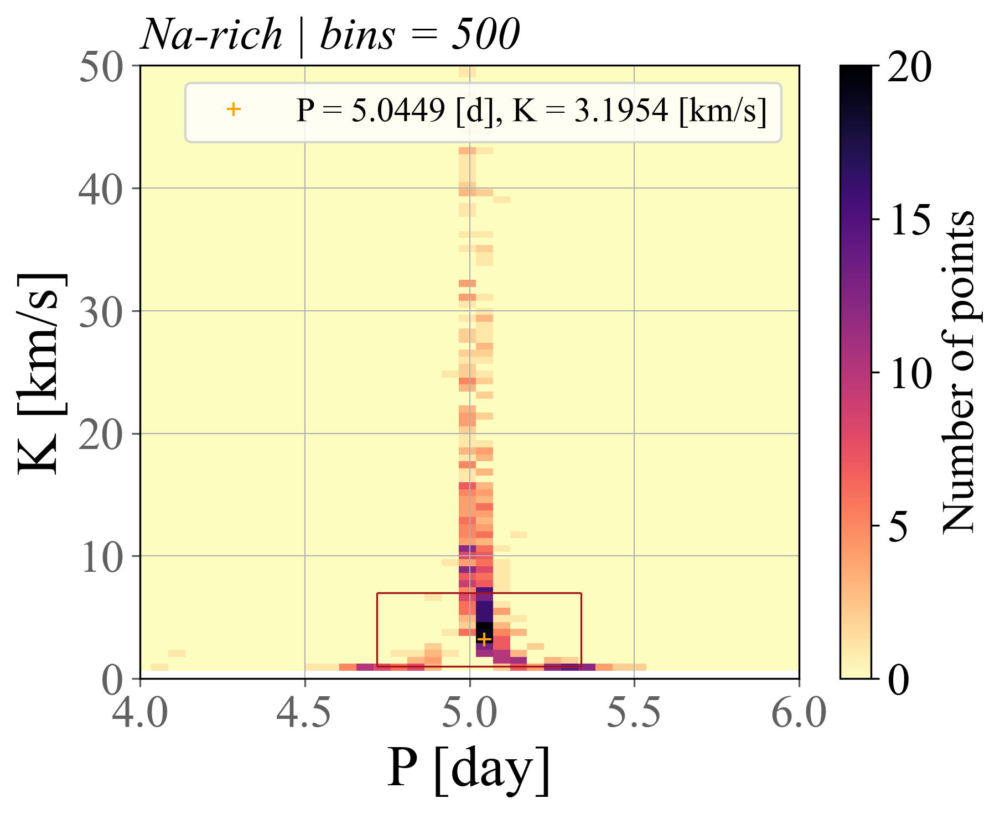

Estrella
Resumen de parámetros
\[ \begin{array}{rl} ID-TYC: & TYC6908-1643-1 \\ APOGEE: & ... \\ FIDEOS: & -80.62 ± 0.62~ [km ~s^{-1}] \\ T_m: & 44.26~\text{[min]}\\ N: & 4\\ M: & 894909 \\ P: & 5.02_{-0.01}^{+0.12} \text{ [day]} \\ e: & 0.02_{-0.02}^{+0.36} \\ \omega: & 1.57_{-1.86}^{+2.18} \text{ [deg]} \\ \Phi_0: & 2.02_{-4.07}^{+0.19} \text{ [deg]} \\ K: & 0.85_{-0.20}^{+4.73} \text{ [km~s^{-1}]} \\ V_0: & -80.6_{-2.2}^{+1.5} \text{ [km~s^{-1}]} \\ \text{Mass}: & 0.03_{-0.02}^{+0.12} \text{ [M_{\odot}]} \end{array} \]